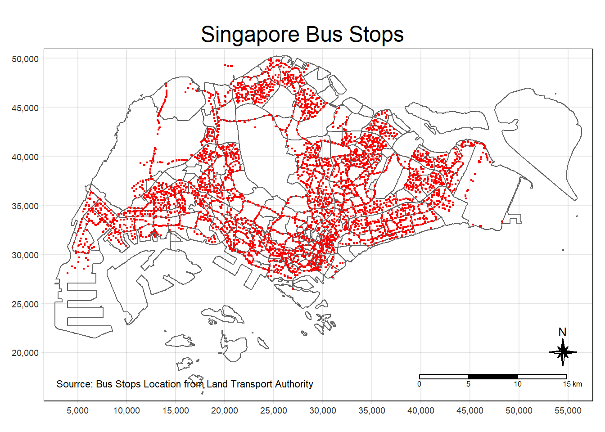
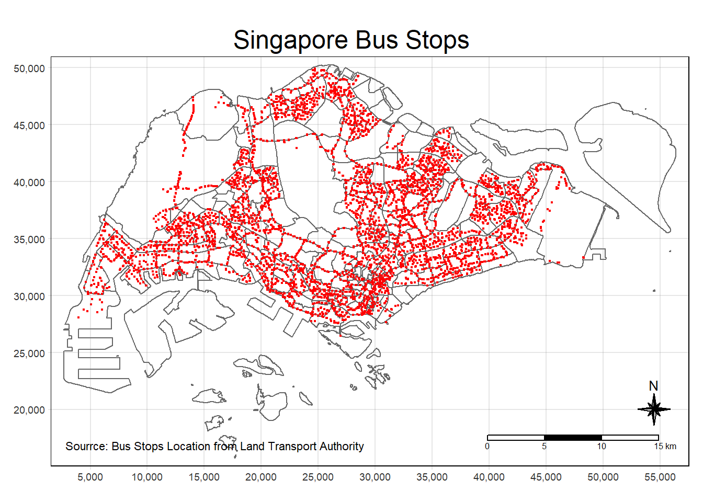
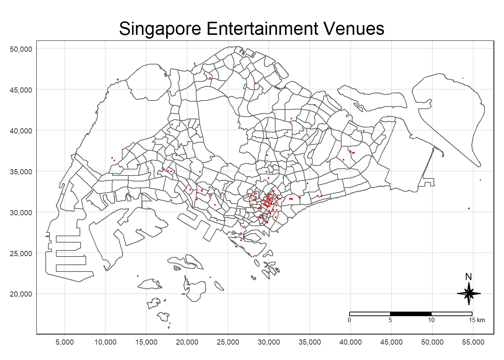
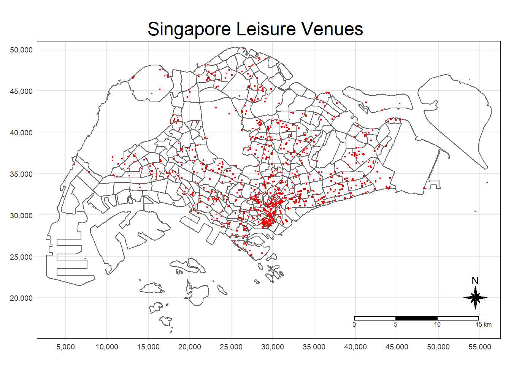

pacman::p_load(tmap, sf, sp, DT, performance, reshape2, ggpubr, units, tidyverse, sfdep)Take-Home_Ex2
Getting Started
First, the necessary R packages will be loaded using the p_load() function of the pacman package. p_load() will also install any package which is not already installed. The following packages will be loaded:
sf: For handling of geospatial data.
sfdep: For determining the spatial dependence of spatial features. The three main categories of functionality relates to the determination of geometry neighbors, weights, and LISA.
tidyverse: For manipulation of non-spatial data. This package contains ggplot2 for plotting, dplyr and tidyr for dataframe manipulation, and readr for reading comma-separated values (CSV).
tmap: For thematic mapping, especially the mapping of simple features data frame.
spdep: For drawing Moran scatterplot.
Importing Required Data
For the purpose of this study, two types of data will be used: geospatial data which consists of spatial features and their coordinates information, and aspatial data which consists of attributes which can be ascribed to the geospatial data. Specifically, the following datasets will be used for each type:
- Geospatial Data:
- BusStop.shp: This shape file contains the location of the bus stops in Singapore as at July 2023. This file can be retrieved from the Land Transport Authority (LTA) Data Mall (link).
- Business.shp:
- entertn.shp:
- F&B.shp
- FinServ.shp
- Liesure&Recreation.shp
- Retails.shp
- Aspatial Data:
- origin_destination_bus_202309.csv: This CSV file contains the detail of bus trips from an originating bus stop to a destination bus stop, identified by their unique codes, each hour of the day during September 2023. The data is further broken down into weekend or weekday, but not by the specific day of the week. This data can be retrieved by using the LTA Data Mall’s API (link).
- hdb.csv:
The first steps taken will be to import these files into the R environment in a manipulable format.
Importing Geospatial Data
Geospatial data can be imported using the st_read() function of the sf package. This will import the file into the R environment as a sf (simple features) data frame. st_transform() is added to transform the Coordinate Reference System (CRS) to EPSG: 3414, which is the CRS of Singapore.
Note
In st_read():
dsn: the directory where the shape file is stored
layer: the name of the shape file
mpsz <- st_read(dsn = 'data/geospatial',
layer = 'MPSZ-2019') %>%
st_transform(crs = 3414)Reading layer `MPSZ-2019' from data source
`D:\phlong2023\ISSS624\Take-Home_Ex\Take-Home_Ex2\data\geospatial'
using driver `ESRI Shapefile'
Simple feature collection with 332 features and 6 fields
Geometry type: MULTIPOLYGON
Dimension: XY
Bounding box: xmin: 103.6057 ymin: 1.158699 xmax: 104.0885 ymax: 1.470775
Geodetic CRS: WGS 84busstop <- st_read(dsn = 'data/geospatial',
layer = 'BusStop') %>%
st_transform(crs = 3414)Reading layer `BusStop' from data source
`D:\phlong2023\ISSS624\Take-Home_Ex\Take-Home_Ex2\data\geospatial'
using driver `ESRI Shapefile'
Simple feature collection with 5161 features and 3 fields
Geometry type: POINT
Dimension: XY
Bounding box: xmin: 3970.122 ymin: 26482.1 xmax: 48284.56 ymax: 52983.82
Projected CRS: SVY21trainstation <- st_read(dsn = 'data/geospatial',
layer = 'RapidTransitSystemStation')Reading layer `RapidTransitSystemStation' from data source
`D:\phlong2023\ISSS624\Take-Home_Ex\Take-Home_Ex2\data\geospatial'
using driver `ESRI Shapefile'
Simple feature collection with 220 features and 4 fields
Geometry type: POLYGON
Dimension: XY
Bounding box: xmin: 6068.209 ymin: 27478.44 xmax: 45377.5 ymax: 47913.58
Projected CRS: SVY21# trainstation <- trainstation %>%
# filter(st_is_valid(.))
trainexit <- st_read(dsn = 'data/geospatial',
layer = 'Train_Station_Exit_Layer')Reading layer `Train_Station_Exit_Layer' from data source
`D:\phlong2023\ISSS624\Take-Home_Ex\Take-Home_Ex2\data\geospatial'
using driver `ESRI Shapefile'
Simple feature collection with 565 features and 2 fields
Geometry type: POINT
Dimension: XY
Bounding box: xmin: 6134.086 ymin: 27499.7 xmax: 45356.36 ymax: 47865.92
Projected CRS: SVY21Business <- st_read(dsn = 'data/geospatial',
layer = 'Business')Reading layer `Business' from data source
`D:\phlong2023\ISSS624\Take-Home_Ex\Take-Home_Ex2\data\geospatial'
using driver `ESRI Shapefile'
Simple feature collection with 6550 features and 3 fields
Geometry type: POINT
Dimension: XY
Bounding box: xmin: 3669.148 ymin: 25408.41 xmax: 47034.83 ymax: 50148.54
Projected CRS: SVY21 / Singapore TMEntertainment <- st_read(dsn = 'data/geospatial',
layer = 'entertn')Reading layer `entertn' from data source
`D:\phlong2023\ISSS624\Take-Home_Ex\Take-Home_Ex2\data\geospatial'
using driver `ESRI Shapefile'
Simple feature collection with 114 features and 3 fields
Geometry type: POINT
Dimension: XY
Bounding box: xmin: 10809.34 ymin: 26528.63 xmax: 41600.62 ymax: 46375.77
Projected CRS: SVY21 / Singapore TMFoodBev <- st_read(dsn = 'data/geospatial',
layer = 'F&B')Reading layer `F&B' from data source
`D:\phlong2023\ISSS624\Take-Home_Ex\Take-Home_Ex2\data\geospatial'
using driver `ESRI Shapefile'
Simple feature collection with 1919 features and 3 fields
Geometry type: POINT
Dimension: XY
Bounding box: xmin: 6010.495 ymin: 25343.27 xmax: 45462.43 ymax: 48796.21
Projected CRS: SVY21 / Singapore TMFinServ <- st_read(dsn = 'data/geospatial',
layer = 'FinServ')Reading layer `FinServ' from data source
`D:\phlong2023\ISSS624\Take-Home_Ex\Take-Home_Ex2\data\geospatial'
using driver `ESRI Shapefile'
Simple feature collection with 3320 features and 3 fields
Geometry type: POINT
Dimension: XY
Bounding box: xmin: 4881.527 ymin: 25171.88 xmax: 46526.16 ymax: 49338.02
Projected CRS: SVY21 / Singapore TMLeisure <- st_read(dsn = 'data/geospatial',
layer = 'Liesure&Recreation')Reading layer `Liesure&Recreation' from data source
`D:\phlong2023\ISSS624\Take-Home_Ex\Take-Home_Ex2\data\geospatial'
using driver `ESRI Shapefile'
Simple feature collection with 1217 features and 30 fields
Geometry type: POINT
Dimension: XY
Bounding box: xmin: 6010.495 ymin: 25134.28 xmax: 48439.77 ymax: 50078.88
Projected CRS: SVY21 / Singapore TMRetails <- st_read(dsn = 'data/geospatial',
layer = 'Retails')Reading layer `Retails' from data source
`D:\phlong2023\ISSS624\Take-Home_Ex\Take-Home_Ex2\data\geospatial'
using driver `ESRI Shapefile'
Simple feature collection with 37635 features and 3 fields
Geometry type: POINT
Dimension: XY
Bounding box: xmin: 4737.982 ymin: 25171.88 xmax: 48265.04 ymax: 50135.28
Projected CRS: SVY21 / Singapore TMTo get a better grasp of the busstop data frame, glimpse() function can be used.
The data type for each column can be seen as well as some of their values. For sf data frames, there is a geometry column (POINT type) which contains the location information for each polygon.
glimpse(busstop)Rows: 5,161
Columns: 4
$ BUS_STOP_N <chr> "22069", "32071", "44331", "96081", "11561", "66191", "2338…
$ BUS_ROOF_N <chr> "B06", "B23", "B01", "B05", "B05", "B03", "B02A", "B02", "B…
$ LOC_DESC <chr> "OPP CEVA LOGISTICS", "AFT TRACK 13", "BLK 239", "GRACE IND…
$ geometry <POINT [m]> POINT (13576.31 32883.65), POINT (13228.59 44206.38),…Additionally, busstop can be visualized in order to spot any anomaly. This can be done using the qtm() function in the tmap package for quick plotting.
tm_shape(mpsz)+
tm_polygons()+
tm_shape(busstop)+
tm_dots()The visualization shows us that there are four bus stops in Malaysia. Let’s remove them so that only bus stops in Singapore will be considered. This is because these special bus stops might exhibit different behaviors due to their different context from the rest of the bus stops in Singapore.
filter() can be used in conjunction with a dplyr step to remove these bus stops.
{r} busstop <- busstop %>% filter(!BUS_STOP_N %in% c('46609','47701', '46211', '46219', '46239'))}
qtm() can be used again to check that the bus stops have been removed.
A similar procedures can be done to glimpse and map the information in the other sf data frames.
glimpse(Business)Rows: 6,550
Columns: 4
$ POI_NAME <chr> "JOHN CHEN", "TROPICAL INDUSTRIAL BUILDING", "LIAN CHEONG I…
$ POI_ST_NUM <chr> "6", "14", "12", NA, "2", "21", "68", "68", NA, "14", "10",…
$ POI_ST_NAM <chr> "LITTLE RD", "LITTLE RD", "LITTLE RD", NA, "LITTLE RD", "LO…
$ geometry <POINT [m]> POINT (33818.36 35620.16), POINT (33770.51 35610.2), …tm_shape(mpsz)+
tm_polygons()+
tm_shape(Business)+
tm_dots()
Description
glimpse(Entertainment)Rows: 114
Columns: 4
$ POI_NAME <chr> "TP AUDITORIUM", "NP CONVENTION CENTRE", "SP AUDITORIUM", "…
$ POI_ST_NUM <chr> NA, NA, NA, "1", "350", NA, "201", NA, "83", "328", NA, "5"…
$ POI_ST_NAM <chr> NA, NA, NA, "FULLERTON SQ", "BALESTIER RD", "TRENGGANU ST",…
$ geometry <POINT [m]> POINT (39115.71 36392.13), POINT (21533.12 34921.34),…tm_shape(mpsz)+
tm_polygons()+
tm_shape(Entertainment)+
tm_dots()
Description
glimpse(FinServ)Rows: 3,320
Columns: 4
$ POI_NAME <chr> "UOB", "POSB", "UOB", "OCBC", "OCBC", "MAYBANK", "ADPOST MO…
$ POI_ST_NUM <chr> "201", "375", "375", "375", NA, "707", "163", NA, "11", NA,…
$ POI_ST_NAM <chr> "YISHUN AVE 2", "COMMONWEALTH AVE", "COMMONWEALTH AVE", "CO…
$ geometry <POINT [m]> POINT (27966.77 44304.65), POINT (24163.96 31606.25),…tm_shape(mpsz)+
tm_polygons()+
tm_shape(FinServ)+
tm_dots()
glimpse(FoodBev)Rows: 1,919
Columns: 4
$ POI_NAME <chr> "KHEL", "I PUB", "LARK LOUNGE & NITE-CLUB", "CHAKRAVARTHY",…
$ POI_ST_NUM <chr> "141", "14", "195", "195", "48", "36", "10", "697", "11", "…
$ POI_ST_NAM <chr> "KITCHENER RD", "CHUN TIN RD", "LAVENDER ST", "LAVENDER ST"…
$ geometry <POINT [m]> POINT (30654.44 32466.51), POINT (21515.34 36007.18),…tm_shape(mpsz)+
tm_polygons()+
tm_shape(FoodBev)+
tm_dots()glimpse(Leisure)Rows: 1,217
Columns: 31
$ LINK_ID <dbl> 914885888, 1046871091, 845355245, 940657500, 940657500, 941…
$ POI_ID <dbl> 1192316147, 1132324271, 1132324254, 1110521716, 1110521715,…
$ SEQ_NUM <int> 1, 1, 1, 1, 1, 1, 1, 2, 1, 1, 1, 1, 1, 1, 1, 1, 1, 1, 1, 1,…
$ FAC_TYPE <int> 8410, 7997, 7997, 7997, 7997, 8410, 7997, 7997, 7997, 7997,…
$ POI_NAME <chr> "NIE ART GALLERY", "ASPIRE CONCEPT", "SOCCERPUNTER", "ANAND…
$ POI_LANGCD <chr> "ENG", "ENG", "ENG", "ENG", "ENG", "ENG", "ENG", "ENG", "EN…
$ POI_NMTYPE <chr> "B", "B", "B", "B", "B", "B", "B", "J", "B", "B", "B", "B",…
$ POI_ST_NUM <chr> NA, "883", "14", "1", "1", "39", NA, NA, "108", "11", "11",…
$ ST_NUM_FUL <chr> NA, NA, NA, NA, NA, NA, NA, NA, NA, NA, NA, "169A", NA, NA,…
$ ST_NFUL_LC <chr> NA, NA, NA, NA, NA, NA, NA, NA, NA, NA, NA, "ENG", NA, NA, …
$ ST_NAME <chr> "NANYANG CRES", "NORTH BRIDGE RD", "ROBINSON RD", "MARINE P…
$ ST_LANGCD <chr> "ENG", "ENG", "ENG", "ENG", "ENG", "ENG", NA, NA, "ENG", "E…
$ POI_ST_SD <chr> "R", "L", "L", "R", "R", "L", "R", "R", "L", "L", "L", "R",…
$ ACC_TYPE <chr> NA, NA, NA, NA, NA, NA, NA, NA, NA, NA, NA, NA, NA, NA, NA,…
$ PH_NUMBER <chr> NA, "66347769", NA, NA, "63446164", "63327591", "67659324",…
$ CHAIN_ID <dbl> 0, 0, 0, 0, 0, 0, 0, 0, 0, 0, 0, 0, 0, 0, 0, 0, 0, 0, 0, 0,…
$ NAT_IMPORT <chr> "N", "N", "N", "N", "N", "N", "N", "N", "N", "N", "N", "N",…
$ PRIVATE <chr> "N", "N", "N", "N", "N", "N", "N", "N", "N", "N", "N", "N",…
$ IN_VICIN <chr> "N", "N", "N", "N", "N", "N", "N", "N", "N", "N", "N", "N",…
$ NUM_PARENT <int> 0, 0, 0, 1, 1, 0, 0, 0, 0, 1, 1, 0, 0, 0, 1, 2, 0, 0, 0, 0,…
$ NUM_CHILD <int> 0, 0, 0, 0, 0, 0, 4, 4, 0, 0, 0, 0, 0, 0, 0, 0, 0, 0, 0, 1,…
$ PERCFRREF <int> NA, NA, NA, 43, 43, 51, 40, 40, NA, NA, 40, 99, 59, 15, NA,…
$ VANCITY_ID <dbl> 0, 0, 0, 0, 0, 0, 0, 0, 0, 0, 0, 0, 0, 0, 0, 0, 0, 0, 0, 0,…
$ ACT_ADDR <chr> NA, NA, NA, NA, NA, NA, "1 CHOA CHU KANG STREET 53 …
$ ACT_LANGCD <chr> NA, NA, NA, NA, NA, NA, "ENG", "ENG", NA, NA, NA, NA, NA, N…
$ ACT_ST_NAM <chr> NA, NA, NA, NA, NA, NA, "CHOA CHU KANG STREET 53", "CHOA CH…
$ ACT_ST_NUM <chr> NA, NA, NA, NA, NA, NA, "1", "1", NA, NA, NA, NA, NA, NA, N…
$ ACT_ADMIN <chr> NA, NA, NA, NA, NA, NA, "SINGAPORE", "SINGAPORE", NA, NA, N…
$ ACT_POSTAL <chr> NA, NA, NA, NA, NA, NA, "689236", "689236", NA, NA, NA, NA,…
$ ENTR_TYPE <chr> NA, NA, NA, NA, NA, NA, NA, NA, NA, NA, NA, NA, NA, NA, NA,…
$ geometry <POINT [m]> POINT (10664.66 36585.97), POINT (31490.24 32040.81),…tm_shape(mpsz)+
tm_polygons()+
tm_shape(Leisure)+
tm_dots()
Description (a lot of columns, possible to only keep the one we need)
glimpse(Retails)Rows: 37,635
Columns: 4
$ POI_NAME <chr> "TIAN KEE & CO", "PEOPLE TRADITIONAL CHINESE MEDICAL", "RIV…
$ POI_ST_NUM <chr> "12", "12", NA, NA, "588", "243", "208", "267", "231", "158…
$ POI_ST_NAM <chr> "DAKOTA CRES", "DAKOTA CRES", NA, NA, "SERANGOON RD", "ALEX…
$ geometry <POINT [m]> POINT (33713.83 32023.15), POINT (33713.83 32023.15),…tm_shape(mpsz)+
tm_polygons()+
tm_shape(Retails)+
tm_dots()Importing Aspatial Data
The read_csv() function of readr can be used to import the origin_destination_bus_202309 CSV file into the R environment as a data frame.
passenger <- read_csv('data/aspatial/origin_destination_bus_202309.csv')From the message provided by R, it can be seen that the passenger has 5,714,196 rows and 7 columns.
head() can be used instead of glimpse() to view the top five rows of the passenger data frame. This will also allow us to see the data type of each of the column.
head(passenger)# A tibble: 6 × 7
YEAR_MONTH DAY_TYPE TIME_PER_HOUR PT_TYPE ORIGIN_PT_CODE DESTINATION_PT_CODE
<chr> <chr> <dbl> <chr> <chr> <chr>
1 2023-09 WEEKENDS/… 17 BUS 24499 22221
2 2023-09 WEEKENDS/… 10 BUS 65239 65159
3 2023-09 WEEKDAY 10 BUS 65239 65159
4 2023-09 WEEKDAY 7 BUS 23519 23311
5 2023-09 WEEKENDS/… 7 BUS 23519 23311
6 2023-09 WEEKENDS/… 11 BUS 52509 42041
# ℹ 1 more variable: TOTAL_TRIPS <dbl>Note that the ORIGIN_PT_CODE and DESTINATION_PT_CODE are in the character (“chr”) data type. However, we would like it to be in the factor (“fctr”) data type for easier categorization and sorting. This can be done by using the as.factor() function.
passenger$ORIGIN_PT_CODE <- as.factor(passenger$ORIGIN_PT_CODE)
passenger$DESTINATION_PT_CODE <- as.factor(passenger$DESTINATION_PT_CODE)We can use head() to check the data type of the passenger data frame.
head(passenger)# A tibble: 6 × 7
YEAR_MONTH DAY_TYPE TIME_PER_HOUR PT_TYPE ORIGIN_PT_CODE DESTINATION_PT_CODE
<chr> <chr> <dbl> <chr> <fct> <fct>
1 2023-09 WEEKENDS/… 17 BUS 24499 22221
2 2023-09 WEEKENDS/… 10 BUS 65239 65159
3 2023-09 WEEKDAY 10 BUS 65239 65159
4 2023-09 WEEKDAY 7 BUS 23519 23311
5 2023-09 WEEKENDS/… 7 BUS 23519 23311
6 2023-09 WEEKENDS/… 11 BUS 52509 42041
# ℹ 1 more variable: TOTAL_TRIPS <dbl>Similarly, the hdb.csv data can be imported using similar methods
hdb <- read_csv('data/aspatial/hdb.csv')
head(hdb)# A tibble: 6 × 37
...1 blk_no street max_floor_lvl year_completed residential commercial
<dbl> <chr> <chr> <dbl> <dbl> <chr> <chr>
1 0 1 BEACH RD 16 1970 Y Y
2 1 1 BEDOK STH AV… 14 1975 Y N
3 2 1 CANTONMENT RD 2 2010 N Y
4 3 1 CHAI CHEE RD 15 1982 Y N
5 4 1 CHANGI VILLA… 4 1975 Y Y
6 5 1 DELTA AVE 25 1982 Y N
# ℹ 30 more variables: market_hawker <chr>, miscellaneous <chr>,
# multistorey_carpark <chr>, precinct_pavilion <chr>,
# bldg_contract_town <chr>, total_dwelling_units <dbl>, `1room_sold` <dbl>,
# `2room_sold` <dbl>, `3room_sold` <dbl>, `4room_sold` <dbl>,
# `5room_sold` <dbl>, exec_sold <dbl>, multigen_sold <dbl>,
# studio_apartment_sold <dbl>, `1room_rental` <dbl>, `2room_rental` <dbl>,
# `3room_rental` <dbl>, other_room_rental <dbl>, lat <dbl>, lng <dbl>, …Unlike passenger, however, the hdb csv file has a column which indicates the longitude and latitude of the each HDB block. This means that it can be visualized using mapview() of the mapview package.
hdb_sf <- hdb %>%
st_as_sf(coords = c('lng','lat'),
crs = 4326) %>%
st_transform(3414)
qtm(hdb_sf)
Data Preparation
Wrangling Aspatial Data
Filtering the passenger Data Set for Desired Time Frames
For the purpose of this study, the passenger data set needs to be filtered to only contain trips falling within one of the following time frames:
| Peak hour period | Bus tap on time |
|---|---|
| Weekday morning peak | 6am to 9am |
| Weekday afternoon peak | 5pm to 8pm |
| Weekend/holiday morning peak | 11am to 2pm |
| Weekend/holiday evening peak | 4pm to 7pm |
This can be accomplished using the filter() function and the dplyr steps. We can create four separate data frames to store the four different time frames
# Weekday morning peak 6am - 9am
passenger_wd_69 <- passenger %>% filter(DAY_TYPE == 'WEEKDAY') %>% filter(TIME_PER_HOUR >= 6 & TIME_PER_HOUR <= 9)
# Weekday afternoon peak 5pm - 8pm (17:00 - 20:00)
passenger_wd_1720 <- passenger %>% filter(DAY_TYPE == 'WEEKDAY') %>% filter(TIME_PER_HOUR >= 17 & TIME_PER_HOUR <= 20)
# Weekend/holiday morning peak 11am - 2pm (11:00 - 14:00)
passenger_weh_1114 <- passenger %>% filter(DAY_TYPE == 'WEEKENDS/HOLIDAY') %>% filter(TIME_PER_HOUR >= 11 & TIME_PER_HOUR <= 14)
# Weekend/holiday evening peak 4pm - 7pm (16:00 - 19:00)
passenger_weh_1619 <- passenger %>% filter(DAY_TYPE == 'WEEKENDS/HOLIDAY') %>% filter(TIME_PER_HOUR >= 16 & TIME_PER_HOUR <= 19)After the different trips have been categorized into their separate data frames, the total number trips for each origin bus stop can be tallied into a single statistic for the study period. This can be accomplished using the summarize() function. The example below shows this operation using passenger_wd_69.
Note
The group_by() function is used to instruct R to conduct operations based on the groups created by group_by(). In this case, the summary operations will be done based on the origin bus stop codes.
# Tallying the trips by origin bus stop for Weekday morning peak 6am - 9am
passenger_wd_69_tallied <- passenger_wd_69 %>%
group_by(ORIGIN_PT_CODE, DESTINATION_PT_CODE) %>%
summarise(TRIPS = sum(TOTAL_TRIPS))
passenger_wd_69_tallied# A tibble: 238,511 × 3
# Groups: ORIGIN_PT_CODE [5,020]
ORIGIN_PT_CODE DESTINATION_PT_CODE TRIPS
<fct> <fct> <dbl>
1 01012 01112 208
2 01012 01113 112
3 01012 01121 63
4 01012 01211 118
5 01012 01311 195
6 01012 01621 3
7 01012 01639 1
8 01012 07371 10
9 01012 60011 30
10 01012 60021 18
# ℹ 238,501 more rowsAs can be seen, the newly created data frame consists only of the total trip numbers for each origin bus stop by their destination. This can be repeated for the other time frames.
# Tallying the trips by origin bus stop for Weekday afternoon peak 5pm - 8pm (17:00 - 20:00)
passenger_wd_1720_tallied <- passenger_wd_1720 %>%
group_by(ORIGIN_PT_CODE, DESTINATION_PT_CODE) %>%
summarise(TRIPS = sum(TOTAL_TRIPS))
# Tallying the trips by origin bus stop for Weekend/holiday morning peak 11am - 2pm (11:00 - 14:00)
passenger_weh_1114_tallied <- passenger_weh_1114 %>%
group_by(ORIGIN_PT_CODE, DESTINATION_PT_CODE) %>%
summarise(TRIPS = sum(TOTAL_TRIPS))
# Tallying the trips by origin bus stop for Weekend/holiday evening peak 4pm - 7pm (16:00 - 19:00)
passenger_weh_1619_tallied <- passenger_weh_1619 %>%
group_by(ORIGIN_PT_CODE, DESTINATION_PT_CODE) %>%
summarise(TRIPS = sum(TOTAL_TRIPS))Wrangling Geospatial Data
In order to adequately visualize the busstop sf data frame, we need to define a mapping layer. An example of a mapping layer would be to use the Master Plan 2019 Planning Sub-zone created by the Urban Redevelopment Authority (URA). However, for the purpose of this study, a hexagon layer will be used to ensure standardization of the size of each polygon and the evenly spaced gaps between a polygon and its neighbors.
The steps in this section will detail the creation of the hexagon layer using the busstop data frame and visualize the layer on a map of Singapore.
Creating a Hexagon Layer in R
The steps taken in this section is based on the guide provided by Kenneth Wong of Urban Data Palette (link).
Firstly, a hexagon or honeycomb grid can be created based on the busstop data frame using the st_make_grid() function.
Note
There are some notable arguments in the st_make_grid() function:
cellsize = c(750,750): This argument indicates the size of each hexagon, calculated as the distance between opposite edges. If the cell size is large, each hexagon can encompasses multiple bus stops, whereas if a smaller cell size can help us differentiate between individual bus stop. However, a smaller cell size with many hexagons will take more time to create. For this study, hexagons of 375m (this distance is the perpendicular distance between the centre of the hexagon and its edges) will be created with the parameter of 750.
what = ‘polygons’: We would like to create polygons on a grid.
square = FALSE: The default argument is TRUE, which would create a square grid. FALSE is specified in order to create a hexagon grid.
area_honeycomb_grid = st_make_grid(busstop, cellsize = c(750,750), what = 'polygons', square = FALSE)
area_honeycomb_gridGeometry set for 2541 features
Geometry type: POLYGON
Dimension: XY
Bounding box: xmin: 3220.122 ymin: 26049.09 xmax: 48970.12 ymax: 53545.39
Projected CRS: SVY21 / Singapore TM
First 5 geometries:The area_honeycomb_grid contains 136906 features of the same Projected CRS as the busstop data frame. If the plot() function is used, the hexagon grid will be displayed. However, this grid contains no information and might be too small to discern the individual cell.
#qtm(area_honeycomb_grid)The area_honey_comb needs to be converted to a sf data frame for further manipulation using st_sf(). Additionally, we can assign a unique id to each of the hexagon cell in area_honey_comb using mutate().
honeycomb_grid_sf = st_sf(area_honeycomb_grid) %>%
# add grid ID
mutate(grid_id = 1:length(lengths(area_honeycomb_grid)))Following this, we can use lengths() and st_intersect() to determine the allocation of bus stop in each cell. The goal is to create a new column, consisting of the number of bus stop in each of the cell. The filter() function can then be added to remove all cells with no bus stop and create the final sf data frame.
# Counting the number of bus stop in each cell
honeycomb_grid_sf$n_busstop = lengths(st_intersects(honeycomb_grid_sf,busstop))
# Removing all cells without bus stop
honeycomb_count = filter(honeycomb_grid_sf, n_busstop > 0)We can see that there are 1050 hexagon cells in honeycomb_count, indicating that there are 1050 cells with at least 1 bus stops.
At this point, the hexagon grid of bus stop can be drawn onto a map of Singapore using the functions of the tmap package. Additionally, the n_busstop column can be passed to the tm_fill() function to shade the cell based on the number of bus stops in it.
Note
tm_basemap: Choosing the basemap layer on which the hexagon grid will be drawn. OpenStreetMap is chosen due to its high fidelity while not being overly crowded. Additionally, OpenStreetMap displays icon for bus stops in Singapore, allowing user to visually check any cell.
- If an incorrect CRS was specified in the earlier steps, the basemap will be of an incorrect location or alignment.
tmap_mode('plot')
bushexmap <- tm_shape(honeycomb_count)+
tm_fill(
col = "n_busstop",
palette = "Blues",
style = "cont",
title = "Number of bus stop",
id = "grid_id",
showNA = FALSE,
alpha = 0.7,
popup.vars = c(
"Number of bus stop: " = "n_busstop"
),
popup.format = list(
n_busstop = list(format = "f", digits = 0)
)
) +
tm_borders(col = "grey40", lwd = 0.7)+
tm_basemap(server = c('Esri.WorldGrayCanvas'))+
tm_layout(main.title = 'Distribution of Bus Stops', main.title.position = 'center')
bushexmapFrom the illustration, we can see that each cell might contain up to 14 bus stops. A bar chat can be drawn with the ggplot2 package to visualize the distribution of number of bus stop in each cell.
ggplot(honeycomb_count, aes(x=n_busstop))+ geom_bar()+ theme_classic()+ geom_text(aes(label = after_stat(count)), stat = "count", vjust = -0.5, colour = "black")As can be seen, the majority of cells contain 1-6 bus stops with only 285 cells containing 7 or more bus stops. This shows that the cells adequately capture solitary bus stop, as well as pairs of bus stops (bus stops which are opposite each other, served by the same bus services).
Combining Aspatial and Geospatial Data
In order to conduct geospatial analysis, a data frame which contains the hexagon cells as well as the number of bus trips for each cells must be created. This can be done using the left_join() function, which will keep all the rows in the left data frame.
Note
There are important arguments which can be used to create a cleaner combined data frame.
by = join_by(BUS_STOP_N == ORIGIN_PT_CODE)): Indicate the column by which the two data frames can be matched and joined. In this case, the bus stop code will be used.
select(1,4,5,6): Indicate the index number of the columns to be kept in the final data frame. Only the bus stop number (column 1), destination bus stop (column 4), total number of trips (column 5), and geometry (column 6) will be kept.
replace(is.na(.),0): Replace all value of NA with 0. This is to ensure that bus stop with no trips in a given time frame is accurately tallied at 0.
For Origin Destination Bus Stop
# Weekday morning peak 6am - 9am
# passenger_wd_69_combined <- right_join(busstop, passenger_wd_69_tallied, by = join_by(BUS_STOP_N == ORIGIN_PT_CODE)) %>%
# select(1,4,5, 6)%>%
# rename(ORIG_PT_CODE = BUS_STOP_N,
# DEST_PT_CODE = DESTINATION_PT_CODE) %>%
# replace(is.na(.),0)
# Weekday afternoon peak 5pm - 8pm (17:00 - 20:00)
# passenger_wd_1720_combined <- right_join(busstop, passenger_wd_1720_tallied, by = join_by(BUS_STOP_N == ORIGIN_PT_CODE))%>%
# select(1,4,5, 6)%>%
# rename(ORIG_PT_CODE = BUS_STOP_N,
# DEST_PT_CODE = DESTINATION_PT_CODE) %>%
# replace(is.na(.),0)
# Weekend/holiday morning peak 11am - 2pm (11:00 - 14:00)
# passenger_weh_1114_combined <- right_join(busstop, passenger_weh_1114_tallied, by = join_by(BUS_STOP_N == ORIGIN_PT_CODE))%>%
# select(1,4,5, 6)%>%
# rename(ORIG_PT_CODE = BUS_STOP_N,
# DEST_PT_CODE = DESTINATION_PT_CODE) %>%
# replace(is.na(.),0)
#
# # Weekend/holiday evening peak 4pm - 7pm (16:00 - 19:00)
# passenger_weh_1619_combined <- right_join(busstop, passenger_weh_1619_tallied, by = join_by(BUS_STOP_N == ORIGIN_PT_CODE))%>%
# select(1,4,5, 6)%>%
# rename(ORIG_PT_CODE = BUS_STOP_N,
# DEST_PT_CODE = DESTINATION_PT_CODE) %>%
# replace(is.na(.),0)For Both
orig_69 <- left_join(passenger_wd_69_tallied, busstop,
by = join_by(ORIGIN_PT_CODE == BUS_STOP_N)) %>%
select(1,2,3,6)%>%
st_as_sf()
destin_69 <- left_join(passenger_wd_69_tallied, busstop,
by = join_by(DESTINATION_PT_CODE == BUS_STOP_N)) %>%
select(1,2,3,6) %>%
st_as_sf()
orig_69_hex <- st_join(honeycomb_count, orig_69, by = st_within)%>%
select(1,3,4,5,6) %>%
filter(grid_id != 50) %>%
rename(ORIG_GRID = grid_id,
ORIG_GEOM = area_honeycomb_grid) %>%
as.data.frame()
destin_69_hex <- st_join(honeycomb_count, destin_69, by = st_within)%>%
select(1,3,4,5,6) %>%
filter(grid_id != 50) %>%
rename(DESTIN_GRID = grid_id,
DESTIN_GEOM = area_honeycomb_grid) %>%
as.data.frame()
combined_69_hex <- inner_join(orig_69_hex, destin_69_hex, by = join_by (ORIGIN_PT_CODE == ORIGIN_PT_CODE,DESTINATION_PT_CODE == DESTINATION_PT_CODE)) %>%
select(ORIG_GRID, DESTIN_GRID, TRIPS.x)%>%
group_by(ORIG_GRID, DESTIN_GRID) %>%
summarise(TOTAL_TRIP = sum(TRIPS.x))